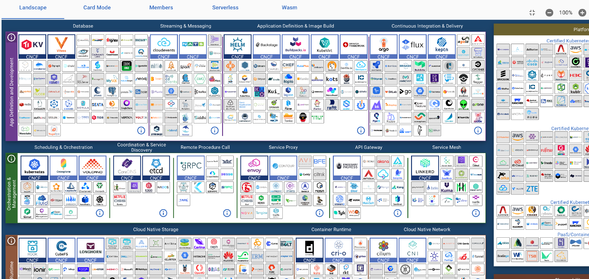

提到云原生领域，我相信你多少都听说过 CNCF (Cloud Native Computing Foundation) 云原生计算基金会，它是 Linux 基金会组织和管理的一个非营利性的技术基金会，致力于推动云原生计算的发展。CNCF 主要关注云原生软件的标准化、普及，以及云原生计算的教育和培训。
对于开发者来说，由于 CNCF 是云原生最上游的组织，所以对它保持关注有助于我们获取一手信息，还有助于我们了解行业发展情况，提升技能水平。
CNCF 和云计算历史
CNCF 成立于 2015 年 12 月，它是 Linux 基金会的一部分。在成立之初，CNCF 得到了 Google 和 SoundCloud 的支持，这两家公司分别捐赠了著名的 Kubernetes 以及 Prometheus，在当时，一并作为会员加入 CNCF 的企业还有：Cisco、CoreOS、Docker、Google、华为、IBM、Intel 和 Redhat 等。
如果我们回顾云计算历史，会发现 CNCF 的诞生是非常顺应时代的。
2000 年以前，当时流行的技术是以 Sun 公司为代表的非虚拟化技术，在需要运行应用时，首先要购买物理服务器，然后在服务器上运行它。
1 年后，也就是 2001 年，VMWARE 的虚拟化技术得到普及，我们能够在一台物理机上运行多个虚拟机了，虚拟机成为了程序运行的载体。
2006 年，Iaas（基础设施即服务） 诞生了，AWS 创建了以 EC2 服务器为代表的云计算和弹性计费的方式，用户在使用的时候可以按小时付费，AMI（Amazon Machine Image）镜像成为了程序打包和运行的普遍方式。
3 年后，也就是 2009 年，PaaS（平台即服务）诞生了，以 Heroku 为代表的 PaaS 平台变得非常流行，这时候，基础设施层面产生了巨大的变化，以 Buildpack 为代表的技术已经开始有了容器的概念，尽管这个过程并不透明。在当时，交付应用只需要执行一条命令简直是一项魔法技术。
2010 年，IaaS 层的开源方案 OpenStack 诞生了，它由 AWS 和 VMWARE 完成，至今 OpenStack 在私有云的市场仍然是非常流行的解决方案。2011 年，Cloud Foundry 发布了开源的 PaaS 解决方案，它是 Heroku 的开源替代方案。
2013 年，最著名的 Docker 技术诞生了，Docker 整合了 LXC、联合文件系统和 cgroups 技术并创建了一个容器化标准，它是有史以来普及率最快的开发者技术，现在仍然被全世界的开发者使用。Docker 技术实现了隔离、可重用和不可更改性，它彻底改变了应用的构建、分享和交付方式。
随着容器技术的蓬勃发展，2 年后，也就是 2015 年，CNCF 成立了，CNCF 开始传播微服务和容器化的技术。直到今天，微服务和容器化仍然是让企业趋之若鹜的热点技术。
从历史发展中看，我们会发现应用的运行环境产生了巨大的变化。从最初的物理机，到虚拟机，再到 Buildpacks，最后到容器，应用的交付产物越来越内聚。
此外，运行环境的隔离性也产生了一系列的变化，从最初的硬件隔离，到虚拟化隔离，最后到容器技术的 cgroups 隔离，它们的隔离方式越来越轻量。
最后，从供应商的角度来看，软件从最初的封闭和单一供应商逐渐演进为开源和跨供应商。
组织形式
CNCF 是一个中立组织，它主要通过推动开源项目的发展来实现自身的目标，所以它的社区组织形式是为了更好地推动开源项目发展而设计的。
员工、会员和大使
首先，CNCF 作为非营利性组织有它自己的全职员工。就像公司的组织架构一样，它也有 CTO、总监、项目管理和开发者关系等职能岗位。此外，由于 CNCF 的工作大多数是围绕着开源项目的社区会议进行的，所以它还有诸如会议和事件管理岗负责统筹和协调。
其次，CNCF还会向全球企业招募会员，例如国内的腾讯云、蚂蚁金服和华为等都是其会员。这些云厂商每年需要向 CNCF 支付一定的费用来维持它在基金会的席位，这其实也是CNCF的重要收入来源。会员是 CNCF 组织形式中非常重要的组成部分，这些厂商和 CNCF 一样也押注在云原生领域，并投入研发的人力来参与到社区的项目中，以获得更广的影响力。
此外，大使也是社区非常重要的组成部分。大使是 CNCF 非官方的布道师，它们通常是社区的意见领袖，CNCF 借助大使的影响力来传播云原生技术。
可见，员工、会员以及大使三个角色是 CNCF 最核心的职位。
TOC 和 SIG
除了上面提到的三类角色以外，由于 CNCF 也非常注重开源社区的贡献，所以，CNCF 还设置了 TOC（Technical Oversight Committee）技术监督委员会小组，TOC 小组的成员主要来自两部分，分别是会员（云厂商）固定席位和社区投票。TOC 是 CNCF 的领导层，负责决策和管理 CNCF 的项目和社区。
TOC 主要关注 CNCF 的总体战略和管理，对于 CNCF 托管的项目细节，TOC 是很难在代码层面提供指导的。为此，CNCF 还设置了 SIG（Special Interest Group），也就是特别兴趣小组。SIG 是 CNCF 的技术管理机构，它负责制定规范以及监督所有的 CNCF 项目。目前，活跃的 SIG 小组有以下几个。
- 安全小组：负责云原生访问策略和控制。
- 存储小组：负责云原生存储项目标准制定。
- 应用交付小组：负责云原生应用交付，包括构建、部署和管理。
- 网络小组：负责云原生网络例如 API 网关和负载均衡等。
- 运行时小组：负责制定云原生运行时标准。
- 贡献者策略小组：负责贡献者体验、在可持续性、治理和开放性提供指导。
- 可观测性小组：负责云原生可观测性和最佳实践。
- 环境可持续性小组：负责云原生环境可持续性，例如碳排放。
项目托管
开源项目是 CNCF 的核心资产，比如著名的 Kubernetes、etcd 和 Helm 等项目都是 CNCF 的托管项目。托管项目来自厂商的捐赠，捐赠内容包括源码、商标和网站等和项目相关的内容。
为了区分项目的成熟度，CNCF 把项目分成了三个阶段，分别是：
- Sandbox（沙箱阶段）
- Incubating（孵化阶段）
- Graduated（毕业阶段）
当一个项目被捐赠时，会首先进入到沙箱阶段。进入沙箱阶段后，CNCF 会给予项目一些宣发资源以及参加云原生大会的机会。经过一段时间的发展后，如果项目的使用人数、贡献者和成熟度符合一定的要求，经过 TOC 的评审，项目会进入到下一个孵化阶段，最后再到毕业阶段。
由此可见，CNCF 的毕业项目是从所有捐赠项目中层层筛选出来的，它们通常已经非常成熟并且被广泛使用了，它们一般代表了云原生某个领域的事实标准。
那么，厂商为什么会把自己重金投入的项目免费捐赠给 CNCF 呢？我认为主要的原因有三个。首先，CNCF 基金会作为云原生的风向标，项目被接受意味着 CNCF 对项目的认可。从事开源的团队一般都是大公司团队，这对团队的考核有非常大的帮助，也是团队实施捐赠的动力来源。
其次，在项目捐赠后，可以通过 CNCF 的影响力吸引更多的用户以及贡献者，在进一步完善开源项目的同时，也增加了核心维护厂商的品牌影响力，促进他们换取更高的商业价值。
最后，所有捐赠给 CNCF 的项目都有机会成为云原生某个领域的标准，一旦自己所维护的项目成为了标准，其商业价值是不可估量的。
今天，捐赠已经不再是一种纯粹的开源行为，更多地代表了背后厂商的利益，通过捐赠能够加速项目的发展，最终为项目带来更多商业化的可能性。
职业认证
职业认证是 CNCF 最重要的板块之一，在为开发者提供认证的同时，CNCF 也能从中获得收入。
目前，CNCF 的职业认证有以下几个。
- CKA：Kubernetes 管理员认证
- CKAD：Kubernetes 开发者认证
- CKS：Kubernetes 安全认证
- KCNA：Kubernetes 管理员助理认证
- PCA：Prometheus 管理员认证
- KCSA：Kubernetes 安全助理认证
对于开发者来说，我推荐你参加 CKA 和 CKAD 认证。这两个认证推出的时间长，市场认可度高，在很多 DevOps、SRE 和运维开发工程师的招聘描述上，你都能看到这两个认证的要求。
职业认证一般是通过远程的方式来进行的，考官会在远程监督考试过程。
CNCF Landscape
稍微了解云原生领域的同学可能会知道，云原生相关的产品数量是非常庞大的。为了能够更好地收集、分类并展示它们，为云原生行业的从业者和研究者提供便利， CNCF Landscape 孕育而生。
CNCF Landscape 中文名叫做云原生全景图。顾名思义，它为我们提供了云原生领域的全局视角，你可以理解为，它为数量庞大的云原生产品做了更加细致的垂直分类。同时，全球任何开发者都可以通过协作的方式，将符合云原生标准的项目提交到云原生全景图中。
如下图所示，这只是云原生全景图的一部分。

为了更好地读懂全景图，首先我们需要对它进行简单的分类。
大体上看，我们可以将全景图分为两大部分：
- 垂直方向和产品；
- 平台和服务商。
垂直方向和产品指的是云原生细分的方向以及这些方向所包含的产品。而平台和服务商指的是与 CNCF 合作的一些云厂商，典型的有 AWS、腾讯云或者阿里云等等。
接下来，我们重点介绍垂直方向和产品这部分。
你可以对照着全景图，结合我下面给出的分类，按照从上到下，从左到右的顺序来解读：
- 数据库（ Database）；
- 数据流和消息（ Streaming & Messaging）；
- 应用定义和镜像构建（ Application Definition & Image Build）；
- 持续集成和持续交付（ Continuous Integration & Delivery）；
- 调度和编排（ Scheduling & Orchestration）；
- 协调和服务发现（ Coordination & Service Discovery）；
- 远程调用（ Remote Procedure Call）；
- 服务代理（ Service Proxy）；
- API 网关（ API Gateway）；
- 服务网格（ Service Mesh）；
- 云原生存储（ Cloud Native Storage）；
- 容器运行时（ Container Runtime）；
- 云原生网络（ Cloud Native Network）；
- 自动化和配置（ Automation & Configuration）；
- 容器仓库（ Container Registry）；
- 安全与合规（ Security & Compliance）；
- 密钥管理（ Key Management）；
- 监控（ Monitoring）；
- 日志（ Logging）；
- 分布式追踪（ Tracing）；
- 混沌工程（ Chaos Engineering）；
- 持续优化（ Continuous Optimization）。
为了能让你有的放矢，我把重点方向做了加粗。也就是说，在日常工作中，我们大概率会接触并使用到的产品都在上面这 12 个垂直方向中。接下来，我就结合实际产品，对这 12 个垂直方向做一下详细的介绍。
应用定义和镜像构建
这个方向聚焦在定义云原生应用以及构建容器镜像上，例如应用编写、打包、测试、安装和升级。主要的产品有下面几类。
- Helm：它是 CNCF 这个类别中唯一的毕业项目。Helm 最初来源于 Deis 团队开发的 Kubernetes Place 项目，可以把它理解为 Kubernetes 的包管理工具。Kubernetes 应用包以 Helm Chart 为载体，提供了非常灵活的应用定义特性。同时，用户可以非常方便地查找、共享、安装和升级 Kubernetes 应用。Helm 经历了 V2 和 V3 两个大版本升级，目前是社区最活跃的 Kubernetes 应用定义项目。Helm 有时候会和 Helmfile 项目一起使用，类似的应用定义项目还有 Kustomize 。
- Buildpacks：CNCF 孵化项目。它是由 Heroku 在 2011 年发起并开发的镜像构建工具，它的特点是能够自动检查编程语言，无需编写 Dockerfile 即可构建镜像。
- KubeVela：CNCF 沙箱项目。KubeVela 基于 OAM （Open Application Model）规范实现，主要由阿里云开发，是一个应用交付和管理平台，支持多集群应用交付。
- Nocalhost：CNCF 沙箱项目，由腾讯云 CODING 团队开发，是一款 Kubernetes 环境的开发工具。它让我们在修改代码后无需重新构建镜像即可查看编码效果，能够加速 Kubernetes 环境下的开发内循环。
- Telepresence：CNCF 沙箱项目。它会通过 VPN 的方式连接 Kubernetes 集群和本地开发环境，方便开发者在本地进行编码和调试应用。
在项目实践上，应用定义环节最开始可能会使用 Kubernetes 原生的 Manifest 来部署应用，随着项目的发展，例如我们需要关注不同环境、多服务镜像版本、环境配置差异的时候，可以进一步将 Manifest 迁移到 Kustomize 或者 Helm 上，为 Kubernetes 应用安装包提供更大的灵活性。
在镜像构建环节， Dockerfile 的构建方式仍然是主流的选择。
可以说，构建镜像是开发者在开发阶段等待时间最长的环节。要想在不必重新构建镜像的情况下就能查看编码效果，你还可以尝试使用 Nocalhost 或 Telepresence。
持续集成和持续交付
这个方向聚焦在 Kubernetes 应用的构建和部署上，也就是我们常说的 CI/CD。主要的产品有ArgoCD、FluxCD、Tekton 和 Spinnaker。
- ArgoCD：CNCF 孵化项目。最初由 Applatix 公司创建和开发，是一个声明式的 GitOps 持续部署工具。ArgoCD 目前是这一领域最活跃的项目，也是在 Kubernetes 环境下构建 GitOps 工作流的首选工具。
- FluxCD：CNCF 孵化项目。和 ArgoCD 类似，也是一款 GitOps 工具，相比较 ArgoCD，FluxCD 在能力上相对薄弱，比如在多租户和 Web UI 方面都略逊一筹。
- Tekton：CD 基金会托管项目，由 Google 开源。它的主要功能是基于 Kubernetes 实现 CI/CD 流水线，使用 Pod 来执行流水线的 Tasks，并通过 PVC 共享工作空间，设计理念非常不错。
- Spinnaker：CD 基金会托管项目。由 Netflix 开源，主要面向多云和混合云的部署环境，配置和使用门槛较高。
除却这些较新的产品，在持续集成环节，也不乏一些老牌的产品，诸如 Jenkins、GitLab CI 等。
云原生的出现改变了 CI/CD 系统的格局，尤其是持续交付方向，ArgoCD 和 FluxCD 开创了以 GitOps 为基础的全新交付方式。对于大部分 Kubernetes 业务应用来说，持续集成主要的功能是自动化测试和构建镜像，持续部署主要的功能是将应用部署到 Kubernetes。这样的话，Tekton(CI) + ArgoCD(GitOps) 的搭配就是一个不错的选择。
当部署环境涉及多云以及混合的运行环境时， 例如， Kubernetes 应用和 VM 应用共存时，可以考虑使用 Spinnaker。
调度和编排
这个方向聚焦在容器调度和基础设施的编排上，例如跨集群调度和管理容器。主要的产品包括 Kubernetes 和 Crossplane。
- Kubernetes：CNCF 毕业项目。Kubernetes 的前生是 Google 的 Borg 系统，主要用于内部的集群调度。Kubernetes 最初的版本在 2014 年开源，经过 8 年的发展，已经成为了容器编排的事实标准。可以说，Kubernetes 和 Docker 凭借一己之力为云计算带来了新的机会和增长。
- Nomad：由 Hashicorp 开源，被誉为“没有复杂性的 Kubernetes”。它与云平台无关，主要针对容器和非容器应用，同时与 Hashicorp 的其他工具互补，例如 Consul、Vault 等，它的成熟度和社区活跃度相比较 Kubernetes 较弱。
- Docker-compose：Docker 开发的容器编排项目，它主要面向多个 Docker 容器的应用，允许用户通过 docker-compose.yaml 模板文件来定义一组相关联的容器。Compose 经常被用于一键拉起本地环境的能力，受到开发者的喜爱。
- Terraform：由 Hashicorp 开源，开创了基础设施即代码(Infrastructure as code)的理念，并提供了声明式的基础设施管理能力。这个项目并不在全景图里，但它是基础设施编排领域最流行的项目。
- Crossplane：CNCF 孵化项目。由 Upbound 公司开发的云原生基础设施控制平面，可以简单地把它理解为 Kubernetes 版的 Terraform，主要是以 CRD 声明式来管理基础设施。
除了 Kubernetes 以外，容器调度方向其实还有非常多的项目，例如 Docker Swarm、Mesos 等，由于 Kubernetes 已经成为了生产级容器调度的事实标准，所以社区认为没有必要再维护它们了。
在基础设施编排方向上，Terraform 是一个非常不错的选择。当然，基于相同理念的 Crossplane 是后起之秀，它可以通过声明 CRD 的方式来管理基础设施，目前在社区也比较活跃。
API 网关
这个方向聚焦在基于 Kubernetes 的 API 网关上，主要的产品有下面几类。
- Emissary-ingress：CNCF 托管项目。由 Ambassador 公司开发，它是一个 Kubernetes API 网关，并且能作为 Kubernetes Ingress 使用，内部基于 Envoy 代理实现。
- Ingress-nginx：Kubernetes 版的 Nginx。虽然这个项目不在云原生全景图中，但它是 Kubernetes Ingress 方向最活跃的项目， **也是我们在 Kubernetes 最经常使用的组件**。
- Traefik：一款现代化的 HTTP 反向代理和负载均衡器，支持部署在多样的基础设施中，例如 Docker、Swarm、Kubernetes、Consul、Rancher 等。
- Kong：老牌的开源网关产品，基于 Openresty 开发，功能强大。
- Apisix：Apache 的托管项目，由国内团队开发，目前处于快速发展阶段。
提到网关，我们最熟悉的莫过于 Nginx 项目，它在 Kubernetes 平台也有相应的实现，也是最常见的 Ingress-nginx 项目。
Kubernetes 通过 Ingress 来统一管理外部服务访问的 API 对象。Ingress 可以是多种实现方式，例如 Ingress-nginx、Emissary-ingress、Traefik-ingress 等，其中， Ingress-nginx 和 Traefik-ingress 是项目中比较常用的 API 网关。
服务网格
服务网格是一个比较新的方向，主要用于大规模微服务架构下的流量管理，尤其是东西流量管理（也就是微服务和微服务之间的流量管理）。主要产品包括 Istio 和 Linkerd2。
- Istio：CNCF 孵化项目。最初由 Google 创立并在 2017 年开源，使用 Envoy 作为代理。大家最熟悉的莫过于它的 Sidecar 机制。Istio 经历了从微服务架构回归到单体架构的转变，是目前最流行的服务网格项目。
- Linkerd2：CNCF 毕业项目，由 Buoyant 公司推出的下一代轻量级服务网格。与 Linkerd 不同的是，它专门针对 Kubernetes 环境。和 Istio 一样，Linkerd2 也能够以 Sidecar 的方式劫持 Pod 的流量，并通过声明式的方式管理集群内的东西和南北流量。
服务网格能够以无侵入的方式为服务调用提供可观察性、流量管理和安全性等方面的支持。在我们最关注的流量管理方面， 服务网格可以无侵入实现服务熔断和降级、金丝雀和灰度发布、访问速率控制、加密以及端到端的身份验证。
比较这两个项目，Istio 目前比较流行，但是数据面采用的是 Envoy 代理，在大规模场景下可能会有性能问题。Linkerd2 也有较好的发展趋势，数据面采用由 Rust 开发的轻量级 Linkerd2-proxy，在大规模场景以及性能方面比较有优势。在使用门槛和复杂性上，Linkerd2 相对简单，更有优势。
云原生存储
这一方向聚焦在 Kubernetes 的存储解决方案，也就是提供持久卷的存储能力上。主要的产品有 Rook、 Longhorn 和 Velero。
- Ceph：Linux 基金会项目。它是一个统一的分布式存储系统，以其高性能、可靠性和可扩展著称，在经过了多年的发展后，目前已经被广泛使用，并且众多云厂商也提供了支持。
- Rook：CNCF 毕业项目。Rook 是一个开源的云原生存储的编排系统，专注在 Kubernetes 上运行 Ceph 分布式存储系统，它可以提供文件、数据块以及对象存储。
- Longhorn：CNCF 孵化项目，最初由 Rancher Labs 开发，除了提供云原生持久化存储支持外，还提供了灾备和恢复能力。
- Velero：由 VMWare 开源的项目。Velero 可以为 Kubernetes 集群提供资源以及持久卷的备份和恢复，通常在备份和迁移 Kubernetes 场景下使用。
云原生存储是通过容器存储接口（CSI）来实现的。它提供了一个标准 API，不同的项目只要实现这些 API 就可以为 Kubernetes 提供持久卷能力支持。
云原生存储方向项目如 Rook、Longhorn 等多用在私有化场景中，对于一些私有化的 Kubernetes，往往需要自建存储服务，以便在 Kubernetes 集群内使用 StorageClass、PV 和 PVC。
而对于使用云厂商托管 Kubernetes 集群的情况，集群的持久化存储基本上会实现由自家云提供的云存储服务， 我们只需要直接使用它们即可。
对于集群备份、迁移以及持久卷的备份和恢复场景，我们可以选择 Velero 项目。 因为它支持使用 Minio 作为备份存储服务，极大简化了 Kubernetes 的备份和恢复过程。
容器运行时
容器运行时是 Kubernetes 执行容器化动作的软件，主要的产品有下面四个。
- Containerd：CNCF 毕业项目。Containerd 最初是 Docker Engine 中的组件，后来被独立出来。创建 Containerd 的目标是提供工业级的容器运行时标准，通过 CRI 插件实现 Kubernetes 容器运行接口（包含容器的全生命周期、拉取和推送镜像等）。目前几乎所有 Kubernetes PaaS 平台都支持该运行时。
- CRI-O：CNCF 孵化项目。CRI-O 是一个轻量级的容器运行时，也可以作为 Containerd 的替代品使用。相较于 Containerd，CRI-O 可以提供更完善的 OCI Hooks，例如 Prestart、Poststart、Poststop 等。
- Kata-Containers：Kata container 是一个轻量级虚拟机的容器运行时。它可以借助轻量级虚拟机的专用内核，实现容器安全和隔离性，在提供安全能力的同时，仍然具备较高的性能。
- gVisor：和 Kata container 类似，是一个安全、隔离的容器运行时。
对于终端用户来说，我们在大部分场景下无需关注容器运行时，因为它们在上层提供的能力基本上是一致的。例如， Containerd 是目前比较常用的容器运行时，也是许多云厂商默认的运行时。在 Kubernetes 1.20 版本过后，社区已经不再推荐使用 Docker 作为运行时了。
不过，如果我们对容器运行时有特殊要求。例如，强调容器之间的隔离性和安全性，特别是对一些希望像用 VM 那样使用 Pod 的团队而言， Kata-Container 或 gVisor 是一个不错的选择。
容器仓库
这个方向聚焦在为镜像提供推送、存储和下载功能。主要的产品有 Harbor 和 Dragonfly2。
- Harbor：CNCF 毕业项目。由 VMware 中国团队开发并开源，也是第一个符合 OCI 标准的镜像仓库。Harbor 提供企业级私有镜像仓库存储服务，包含一系列企业级功能，例如安全、身份验证和管理等，是容器仓库领域最活跃的项目，也是大多数企业在容器仓库上的技术选型。
- Dragonfly2：CNCF 孵化项目，最初由阿里巴巴开发并开源。和 Harbor 不同，Dragonfly 主要解决的是大规模场景下的镜像分发，它是基于 P2P 技术开发的，可以和 Harbor 搭配使用。
容器仓库本质上是一组 Web API 接口，它允许容器运行时推送、查找和下载容器镜像。
当然，除了选择开源项目以外，各大云厂商往往也会有自己商业化的容器仓库产品。例如 GitHub Package、Google Container Registry、AWS ECR 等。这些商业化的产品往往还能够提供例如 CDN 分发和加速、安全等企业级功能。
对于用量不大的团队而言，商业化产品不需要付出维护成本，只需要为存储和流量付费即可，性价比较高。 当然，在用量比较大的业务场景下，自建镜像仓库成本确实更低。
监控
该方向聚焦在为 Kubernetes 提供监控指标采集、查询和可视化服务上，主要的产品有 Prometheus、 Thanos 和 Grafana。
- Prometheus：CNCF 毕业项目。在国内通常称为普罗米修斯，其灵感来源于 Google 的 Borgmon。经过近 10 年的发展，已几乎成为了云原生监控的事实标准，它的社区非常活跃。
- Thanos：CNCF 孵化项目。该项目主要是为 Prometheus 提供高可用的解决方案，例如，支持多样的后端存储系统、数据压缩、提升查询速度等。
- Grafana：用于数据查询和可视化的开源工具。在搭建 Kubernetes 的监控系统时，它通常会和 Prometheus 一起使用，用来系统地提供查询数据和仪表盘的能力。Grafana 社区非常活跃，是可视化工具领域最流行的工具。
在云原生监控方向， Prometheus + Grafana 已经成为非常流行的开源技术选型方案。要快速搭建它们相对容易，但要长期使用的话，这个方案对运维要求还是比较高的，尤其是要面对 Prometheus 的大规模集群和持久化的后端存储方面的挑战。
例如，在大规模的持久化方面，我们经常会把它们和时序数据库 InfluxDB 一起使用，这就会产生额外的运维工作。另外在大规模的监控场景下， Prometheus 也非常容易产生性能瓶颈，这就对 Prometheus 的高可用提出了更大的挑战。
安装 Prometheus 后，它会自动抓取 Kubernetes 和 Pod 在系统级的指标数据。如果你希望采集业务指标，就需要在业务代码中集成相应的 SDK，并且输出符合 Metric 规范的指标数据，提供给 Prometheus 来抓取指标。
当然，如果你不想自己维护开源技术栈，也可以选择其他的商业化产品，例如著名的 Datadog。
日志
日志方向主要聚焦在为 Kubernetes 应用提供日志采集、存储和分析功能，主要产品有 Fluentd 和 Loki。
- Fluentd：CNCF 毕业项目。它是一个开源的日志采集工具，大名鼎鼎的 EFK 日志技术栈中，F 指的就是 Fluentd。Fluentd 非常轻量而且性能优越，所以在社区非常受欢迎。
- Loki：来自 Grafana Labs 。它可以提供轻量级的日志采集解决方案，主要包含三个组件：Promtail、Loki 和 Grafana。Promtail 是一个轻量的日志采集 Agent，Loki 提供日志存储和查询服务，Grafana 则用于展示查询数据。Loki 以其高可用和轻量的特点发展迅速，非常受社区的欢迎，是目前非常不错的日志技术选型。
总的来说，日志方向有不少开源的技术选型，例如我们常见的 EFK 技术栈。EFK 由 Elasticsearch、Fluentd 和 Kibana 组成，其中，Elasticsearch 主要负责存储日志和查询分析，Fluentd 作为 Agent 负责采集日志信息并将日志发送到 Elasticsearch 中存储，Kibana 则作为展示查询结果的 UI 界面。
在一些中小型的应用场景中，Loki 是一个更流行的选择。特别是对于已经采用 Prometheus 作为监控的团队来说， Prometheus + Loki + Grafana 可以一次性解决监控和日志问题。
分布式追踪
该方向致力于为 Kubernetes 应用提供分布式调用链追踪能力。主要产品有 Jaeger、 Skywalking 和 Grafana Tempo。
- Jaeger：CNCF 毕业项目。基于 Google Dapper 论文，由 Uber 公司创建并开源。Jaeger的主要功能是为微服务提供分布式调用链的追踪，主要特点是高扩展性、支持多种后端存储系统、现代化的 UI 界面，同时兼容 OpenTelemetry 和 Zipkin 协议。Jaeger 社区非常活跃，是一个非常不错的技术选型。
- Skywalking：由国内团队开发并开源的分布式系统 APM 和追踪工具，部分语言可以实现无侵入地采集指标和追踪分布式调用链。Skywalking 的性能表现优异，在支持云原生方面也表现良好，受到了社区的欢迎，尤其是它现代化的 Web UI 界面，体验非常不错。
- Grafana Tempo：由 Grafana Labs 带来的开源分布式追踪方案，其特点是易于使用、支持大规模后端以及成本可控。它能够与 Grafana、Prometheus 和 Loki 深度集成，支持 Jaeger、Zipkin、OpenCensus 和 OpenTelemetry 协议，目前社区较为活跃。
分布式追踪方向有很多优秀的开源产品，如果想要实现多语言和端到端的分布式追踪， Jaeger 是一个非常不错的选择，但它的代价是需要集成相对应的 SDK，对业务有一定的侵入性。
如果后端语言比较单一，尤其是使用了 Java 技术栈，推荐使用 Skywalking 作为 APM 和分布式追踪工具，它对业务基本上没有侵入性。
混沌工程
该方向聚焦在为 Kubernetes 应用提供混沌工程实验平台，主要的产品为 Chaos-Mesh 和 Chaosblade。
- Chaos-Mesh：CNCF 孵化项目。Chaos-Mesh是由国内 PingCap 公司开发并开源的混沌工程平台，它主要由 Operator 和 Dashboard 组成，提供了友好的混沌实验操作界面。Chaos-Mesh 的社区较为活跃，在混沌工程方向是一个非常不错的技术选型。
- Chaosblade：CNCF 沙箱项目。由阿里巴巴开源的一款混沌工程实验工具，支持通过 CLI 和 HTTP 进行调用，可以非常方便地注入混沌实验。
混沌工程最早由 Netflix 提出，经过多年的发展，已经成为很多大型分布式应用检验稳定性的实验工具。它能够向系统中随机注入一些常见的故障，例如 CPU 和内存压力测试、IO 故障、网络延迟等，目的是以主动的方式找到微服务系统中较为薄弱的地方，进行定向优化。
在上面列出的这两个项目中，Chaos-Mesh 为我们提供了 UI 操作界面，对于刚接触混沌工程的同学来说是上手混沌工程不错的选择。
如何将自己的项目加入到 Landscape？
前面提到，CNCF Landscape 支持以协作的方式将自己的项目提交到全景图中。具体的协作是通过 GitHub 仓库 来进行的。你可以向这个仓库提交 Pull Request ，把你的项目信息合并到全景图中，特别要注意在提交时选择一个适合的分类。
当提交被 CNCF Review 并合并后，你就可以在 Landscape 网站看到自己的项目了。